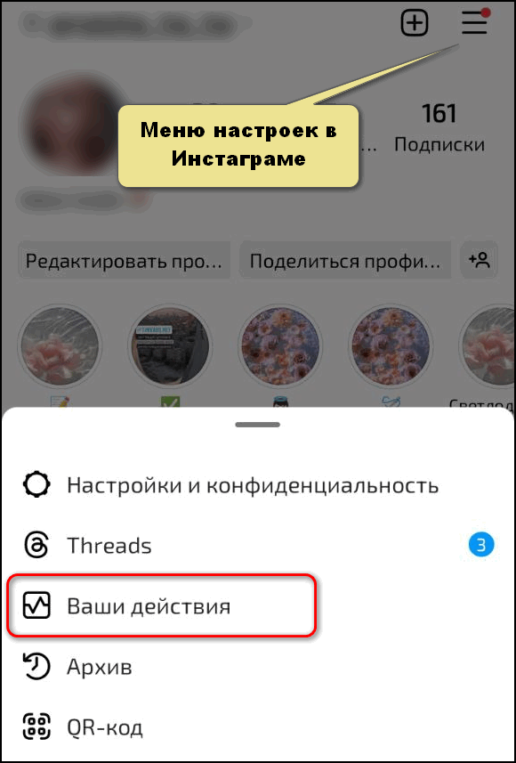
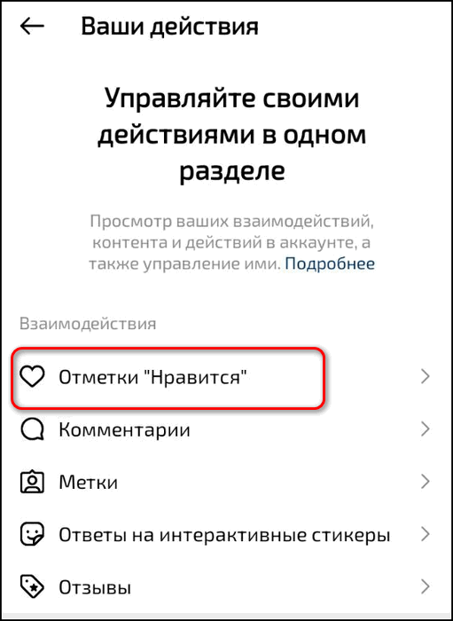
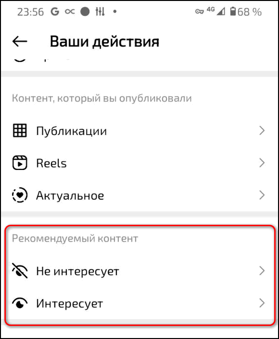

Как найти просмотренный Рилс в Инстаграме

Найти просмотренный Рилс в Инстаграме* можно через раздел «Ваши действия» или с помощью рекомендаций. Зачастую одно и то же видео будет порекомендовано пользователю несколько раз.
2 способа найти ранее просмотренный Рилс в Инстаграме*
Если посмотрел видео и случайно пролистнул — найти нужный Рилс в Инстаграме* будет несложно. Но при условии, что поставил лайк, оставил комментарий или клипы с похожей тематикой часто появляются в Рекомендуемом.
Социальная сеть предлагает видео по принципу заинтересованности в них: у каждого пользователя есть свои темы, составленные на основе подписок, понравившихся постов. Два способа, как отыскать видео:
- рекомендации. На основе интересов клип будет предложен еще раз;
- раздел «Ваши действия». Вкладка в новых версиях приложения, где доступны записи с оставленными комментариями, отметками «Мне нравится».
И третий вариант — посмотреть в Директе. Возможно, вы уже поделились интересным клипом с друзьями, но забыли об этом.
№1: По рекомендациям
В разделе: «Интересное» можно найти записи, которые уже ранее видел или авторов понравившегося контента. В особенности это касается Рилс, где одно и то же видео может появиться до трех раз за сутки. Искать в разделе: «Интересное»:
- Зайти в Инстаграм* - нажать снизу по значку: «Интересное».
- Несколько раз обновить страницу.
- Перейти в одно из рекомендованных Рилс и пролистать.
С помощью вкладки: «Поиск» пользователь может поискать автора. Это могут быть хештеги, тематика. При размещении коротких видео, их создатели нередко указывают тему, по которой в дальнейшем запись будет рекомендована целевой аудитории.
№2 Ваши действия: раздел в Инстаграме*
В одном из обновлений появился раздел: «Ваши действия». Он показывает, какие записи пользователь отметил как понравившиеся, где оставил комментарии. Перейти в раздел:
- Настройки – Ваши действия.

- Понравившиеся публикации – перейти к записям, которые ранее были отмечены «Мне нравится».

В этой категории указаны все публикации, ранее отмеченные пользователем как понравившиеся. Даже если случайно нажал по лайку – он появится в этом списке.
Есть всего пару случаев, когда запись может не появиться в разделе: если автор удалил пост или заблокировал того, кто лайкнул.
Видео нет в списке: что это значит
Если найти определенный Рилс в Инстаграме* не получается, потому что клипа нет в списке – стоит обратиться на страницу автора. Обычно, клипы собравшие большую аудиторию, остаются в профиле, чтобы привлечь ещё новых подписчиков. Причинами для удаления клипа могут стать:
- нарушения правил сообщества;
- автор сам удалил клип;
- заблокирован только пользователь, который ищет это видео;
- страница автора удалена;
- создатель клипа сделал свой профиль закрытым.
Перепроверить можно лишь одним способом – попытаться найти страницу автора. Если вы заблокированы, то не появится даже аватарка. Если же аккаунт скрыт для всех, то будет надпись: «Закрытый профиль».
Найти трендовые видео
Если лайкнутых Рилсов недостаточно, то можно поискать другие не менее интересные клипы. Социальная сеть предлагает видеозаписи, которые отвечают интересам пользователя. И те складываются из времени, которое владелец страницы потратил на просмотр определенного контента. Например, смотрел 20 минут видео про кулинарию, ставил лайки и не пролистывал. В дальнейшем социальная сеть будет больше рекомендовать таких клипов. Также влияют подписки: чем больше подписан на тематические сообщества, тем выше количество клипов по такой теме. Чтобы отфильтровать видео и получать больше интересных:
- чаще переходить по записям, которые появляются в разделе: «Интересное». Пролистывать и просматривать, ставить лайки на понравившиеся;
- отмечать с помощью кнопки: «Мне интересно».
При просмотре клипов у пользователя появится плашка с подписью: «Понравился ли вам этот клип» и два варианта выбора: заинтересован или нет. Таким образом можно управлять рекомендации в своем профиле.
Управлять рекомендованными постами
С помощью раздела: «Ваши действия» можно управлять рекомендованными постами. Отдельный подраздел: «Рекомендовано вам» показывает посты, которые были отмечены пользователем, как интересные. Там же, можно посмотреть записи, которые не понравились и на основе чего составлены рекомендации.

Раздел хранит публикации до 30 дней. Если владелец аккаунта случайно отметил какую-либо запись, как неинтересную, но передумал – пост можно оттуда убрать. Достаточно зажать пальцем по миниатюре публикации и снизу выбрать: «Удалить».